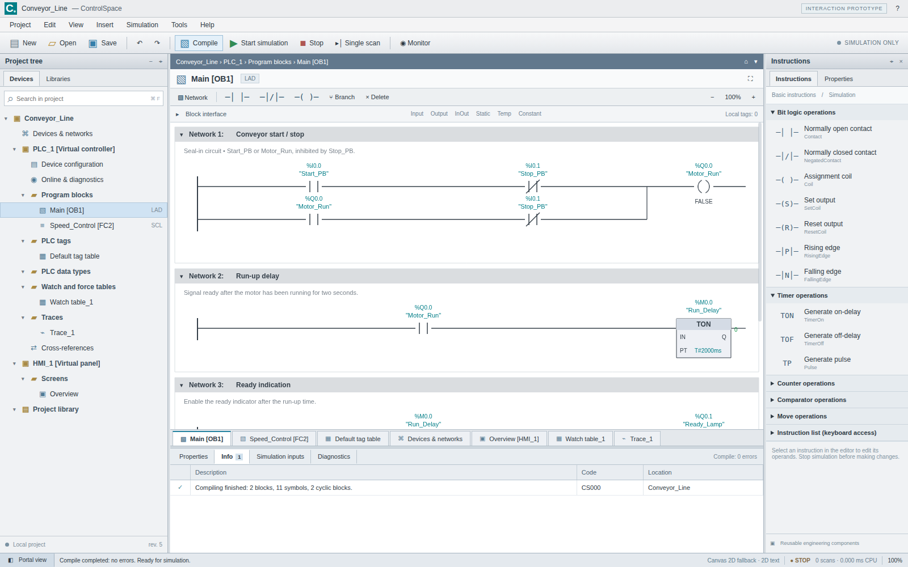

0.1.0 source preview
ControlSpace is an independent TIA Portal-style engineering environment built around a typed project model, bounded language compiler, virtual controller and reusable Uno/Skia controls.
Initial delivery: Uno source was not compiled and no public deployment was verified. JavaScript engine and fallback browser interactions were tested separately. Read the verification report for the exact scope.
Simulation only. No physical controller connection, commissioning, safety function or certified timing is implemented.
Engineering interaction prototype

This screenshot is the separately labelled JavaScript prototype, not the Uno build. See the capability matrix for differences.
Library boundaries
Core · Languages · Simulation · Storage · Engineering · Rendering.Skia · Controls.Uno · Workbench.Uno
The application host only composes these pieces and supplies platform file access.